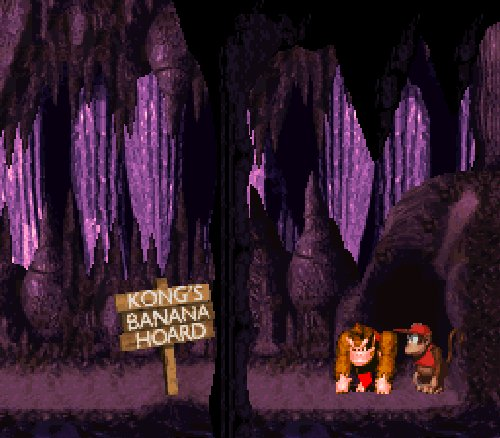
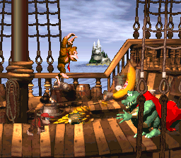
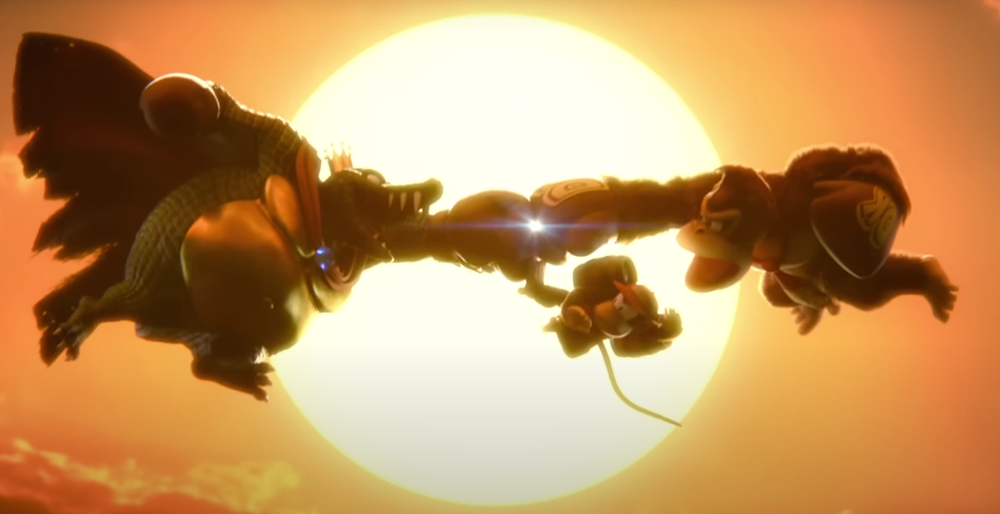

het verhaal begint in de nacht. donkey kong slaapt terwijl diddy de bananenverzameling bewaakt. plotseling vallen troepen van King k. rool diddy aan en overmeesteren hem. ze stelen alle bananen en laten diddy in een ton achter. in level 1 begin je als donkey kong, en verderop in het level bevrijd je ook diddy. samen gaan ze op avontuur om de bananen terug te halen. onderweg komen ze ook Cranky en Funky kong tegen, die het duo helpen met hun avonturen.
op hun avontuur komen ze langs 7 gebieden. de eerste is de kongo jungle, waar ze door de stormige jungle moeten. na het verslaan van de boss Very gnawty, een bever, moeten ze door naar de Monkey mines. dit is een mijngebied met veel grotten. hier klimmen ze over hangende platformen en rijden ze mijnkarren om verder te komen. aan heet eind wacht een grote gier genaamd master necky hen op als de boss van de regio. hierna kunnen ze door naar vine valley, een naaldbomenbos vol met lianen en kanontonnen. aan het eind moeten ze het opnemen tegen de bijenboss queen b. na het verslaan van queen b. kunnen ze door naar de gorilla glacier. dit zijn de bergtoppen van kong island, waar altijd sneeuw ligt. het duo moet hier uitkijken voor gladde vloeren en donkere grotten. hier moeten ze het opnemen tegen really gnawty, de vader van very gnawty. vervolgens reizen ze door naar Kremcroc industries inc. dit is een fabriek opgezet door de kremlings. hier moeten ze het opnemen tegen grote hordes kremlings en een machine genaamd dumb drum. als ze de fabriek hebben ontmanteld, kunnen ze door naar de chimp caverns. wederom vinden de kongs zich in een grottenstelsel. deze keer zijn er zelfs batterij aangedreven platforms! na het verslaan van de vader van master necky genaamd master necky senior is het eind in zicht voor de kongs. ze betreden het schip van king k. rool, de gangplank galleon, en maken een eind aan de tirannie van k. rool.
na hun avontuur hebben de kongs eindelijk al hun bananen terug en de kremlings van het eiland verdreven. en als je echt alles hebt verzameld, krijg je en bonusfilmpje waar alle vrienden en vijanden nog even langskomen!
  